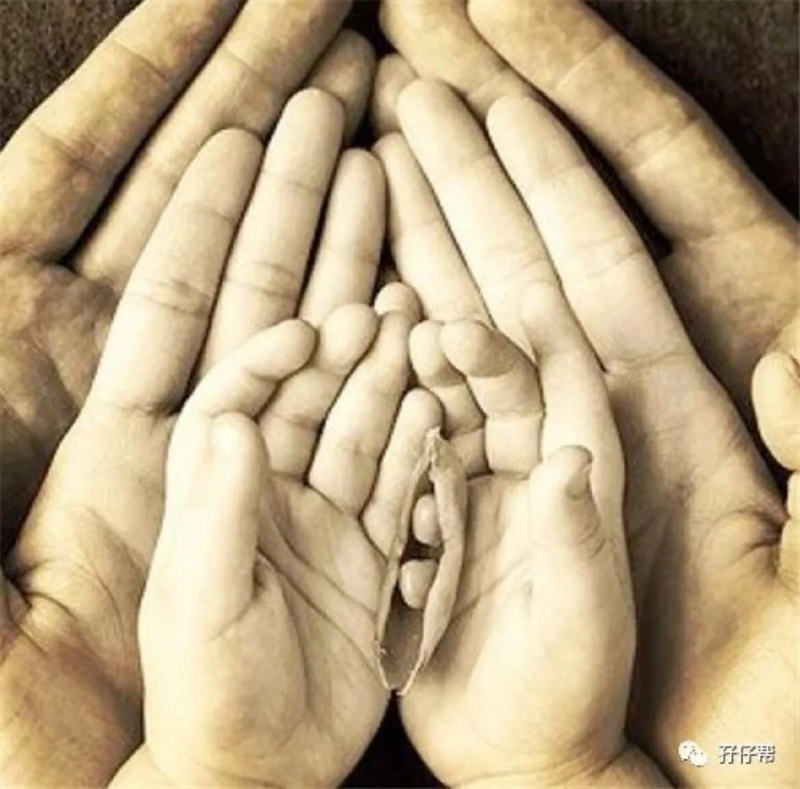
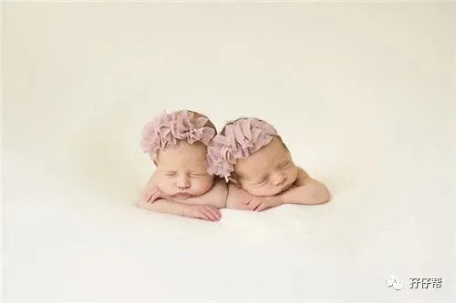
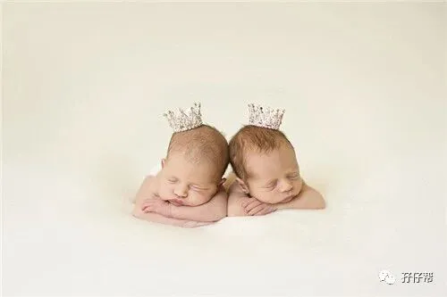
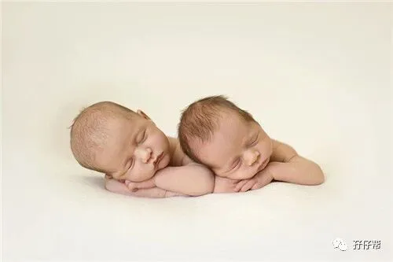

文|圆圈妈，一个文思如尿崩的双胎妈妈
图|来自网络，如有侵权，请联系删除
· 正 · 文 · 来 · 啦 ·
在与一位双胎妈妈闲聊中得知，她因工作原因不得不把刚满月的双胞胎姐妹花分开带，一个放在奶奶家，另一个放在外婆家。
一颗心每天都牵挂着两边，这种累还是其次，最惨的是两姐妹少接触，见面了没有互动交流，几乎没有手足情可言。
我很想问为什么？为什么忍心把姐妹俩分开？
我突然不知道如何跟她聊下去了，我只觉得我跟她完全不在一个频道上！
换做是我，任何理由都不足以让我如此狠心把本应在一起长大的双胞胎孩子活生生地拆散。
而类似这位双胞胎妈妈的做法并不少，而且都有各自不得已而为之的苦衷，综合有3点：
①同时照顾两孩子太累了
一个接一个喂奶，不停地换尿布，最崩溃的是两个同时哭，都不知道先哄哪个好。
最辛苦的是一个孩子先感冒，另一个要想办法“隔离”。
若不小心交叉感染，全家都遭殃，照顾一个生病的孩子已经够折腾了，更别说是两个。
②养育一对双胞胎太烧钱了
现在养孩子的成本太高了，一口气养俩，什么东西都要双份。
家里没有矿，靠一个人赚钱无疑是以卵击石，但两个人上班，势必没有时间精力照顾两孩子。
③二胎来了双胞胎，老大很可怜
意外的二胎，来了两个双蛋黄，面对两个婴儿和一个幼儿，这注定是鸡飞狗跳的生活。
照顾两baby吃喝拉撒睡的同时还要兼顾老大脆弱敏感的幼小心灵，生怕他对弟弟妹妹产生敌意以及对父母有愤恨之心。
于是，带着这些迫不得已的苦衷，心安理得地使出各种招式把双胞胎分开带，比如以下3种常见分开养育模式：
小两口上班，爷爷奶奶和外公外婆各带一个。
妈妈带一个，月嫂或爷爷奶奶或外公外婆带一个。
小两口分居，爸爸和爷爷奶奶带一个，妈妈和外公外婆带一个，每个月互换一次。
但你可知双胞胎分开带的弊端？
老人家会各宠各的，对不是自己养的那个不上心，两孩子也会各亲各的，对不常接触到的其他亲人很生疏。
不在身边养的那个孩子会有被抛弃感，会对父母有怨恨之心，会对另一个有嫉妒之心。
养在身边的那个孩子自认被特别优待，对另一个有鄙视之心或者觉得自己是牺牲了别人充满了愧疚和负罪感。
夫妻长期分居，影响夫妻感情，两孩子们也无法得到完整的父爱和母爱，会影响正常的心理发育。
每个月互换一次更不可取，对孩子来说，一边养熟了，又被换过来，会让孩子无所适从。
我真替那些被迫分开带的双胞胎孩子们不值！
千辛万苦在天上挑选的妈妈居然塞了好多冠冕堂皇的理由，把自己最亲密的手足硬生生拆散了。
想想都来气！
我理解！
家家都有一本难念的经，双胞胎家庭的经，吃了唐僧肉也未必念得出来。
我知道！
你们也很冤枉，委屈，无奈，迫于情势所逼才出此下策。
我明白！
因为4年前我也曾经历过人生中最难以释怀的一道坎：我有能力把双胞胎一起生出来，却没能力把双胞胎一起抚养长大。
严格意义上讲，圆圈兄弟是他们的爷爷奶奶带大的，在他们两岁前，我工作忙，鲜少过问他们的起居饮食。
老人家不习惯深圳，曾经无数次提及要把圆圈兄弟带回老家，或者把两兄弟分开带，爷爷奶奶带一个，外公外婆带另一个。
还说了很多双胞胎分开带的好处，比如容易带，孩子没那么闹，容易睡得好，不会互相干扰，生病了不会交叉感染。
每次我和圆圈爸都斩钉截铁地拒绝！
SAY：不！可！以！
现在想想，我很庆幸当初的坚持！也很感谢两老人家最后的理解和支持。
我家的双胞胎哥俩从小到大一直在一起，从来没有分开过。
虽然他们在一起经常打架，但是他们又彼此牵挂，彼此帮助，彼此爱护着对方。
他们从小就知道身边有一个一模一样的人彼此陪伴着，一起睡，一起吃，一起玩，一起打架，甚至一起抢爸爸妈妈。
因为双胞胎，他们的共情能力无师自通。
他们比其他孩子更能体会分享的快乐，更懂得分工合作，更懂得互帮互助。
同龄孩子间的互相影响力不可小觑，共同的学习环境，良好的互动竞争，促进了他们哥俩的共同成长。
1岁3个月，他们互相把食物塞在对方的嘴里…
1岁8个月，圆圆给慢吞吞的圈圈拿来袜子和鞋子...
2岁6个月，圈圈会给圆圆求情，免得圆圆被大人责罚…
3岁5个月，圆圆会抡起拳头保护圈圈不被其他孩子欺负…
…..
有一则新闻曾报导：双胞胎分开养，等五六岁的时候才放一起生活，结果两孩子互相仇视，没有亲情可言。
两孩子性格悬殊，强势的孩子把性格内向的孩子打得头破血流，抽个工夫就欺负另一个孩子，互相都觉得对方抢走自己父母亲的爱。
童年是否快乐对人一生的性格形成至关重要。
一般有心理疾病的患者，排除遗传因素，几乎都与童年不愉快的经历和家长的不公平对待密切相关。
武汉一儿童心理专家认为：双胞胎生下来就一起养对身心成长更有利，被“分开寄养”绝对是弊多利少。
两个孩子年龄相同，“心有灵犀”，兴趣爱好相似，一起生活容易相互沟通交流，更有利于发展出较为完善的人格。
而错过了亲密关系和安全感建立关键时期，3岁“重逢”后重新建立信任和默契往往要付出更大代价。
可见，相比其他小孩，双胞胎孩子何其幸运啊。
从小胚芽开始就有伴陪伴着彼此在寂寞无聊的子宫里生长发育，然后呱呱坠地，一起长大成人，分享成长中的喜怒哀乐…
当别的小孩还在发愁找不到玩伴时，双胞胎孩子已经有了固定的小伙伴一起哭，一起笑，一起闹…
这是孩子们多么弥足珍贵的成长历程啊！
真心呼吁双胞胎家庭，再苦再难都不要把双胞胎孩子分开带！
为了双胞胎孩子天赐的手足情，请坚持一下吧！经济上精力上，苦一点累一点也罢。
只要两孩子感情好，那些苦，那些难又算几根葱呢？
看下这段视频
双胞胎要不要在一起成长
听一听
双胞胎本人的真实心声
不知为何，我看到最后就哭了。
双胞胎孩子居然把那位跟自己长得一模一样的人看得那么重要。
尤其是那一对双胞胎姐妹花说的：终究要嫁人，各自有各自的家庭，这样相互陪伴在一起的日子过一天少一天。
请问，我们还有什么理由不争分夺秒地把双胞胎孩子们放在一起抚养呢？
这世上没有迫不得已，只有你愿不愿意！坚不坚定！
今日互动话题
#你家双胞胎被迫分开养了吗？#
欢迎留言区说出你的想法
-END-
重磅互动
#你希望写什么育儿经验干货？#
评论区聊一聊
随便提，万一下篇就写了呢？
关于这个号
谢谢关注！
我是圆圈妈
85后，全职妈妈
家有孖仔两枚，圆圈&圈圈
双胞胎育儿公众号：孖仔帮
ID:twinsbang
旨意分享双胞胎育儿经验帮助双胞胎家庭
有经验可循
有组织可靠
希望我的经验对您有所启发
期待与您一起共享双胞胎育儿经



